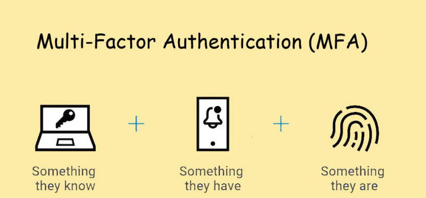
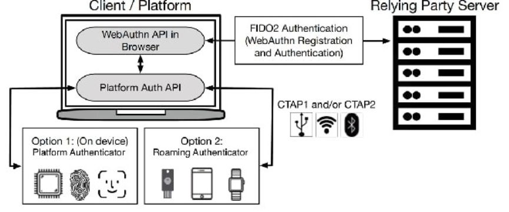
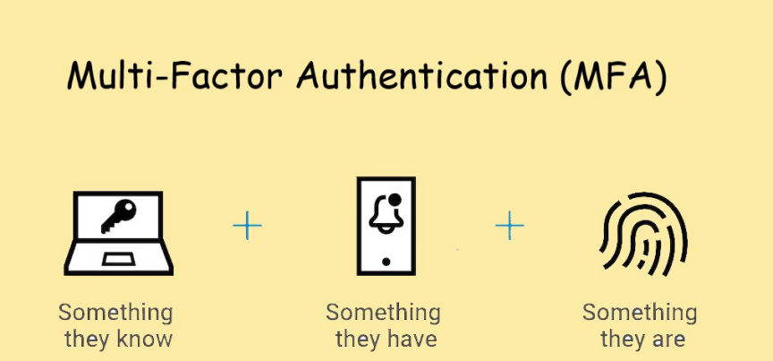
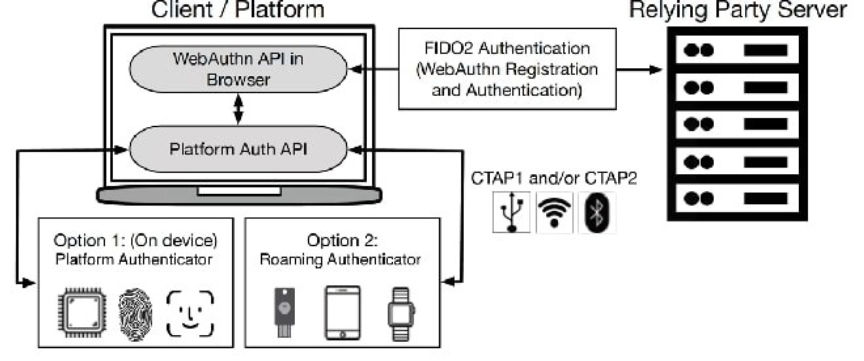

A Guide to Multi-Factor Authentication (MFA)
Attackers are constantly looking for ways to gain unauthorized access to your data. One effective way of enhancing your online security is by implementing Multi-Factor Authentication (MFA). MFA enhances your security by requiring multiple forms of verification before granting access.

Multi-Factor Authentication (MFA), requires users to provide at least two different forms of authentication to access their accounts. The authentication factors can be categorized as:
MFA combines these factors to significantly reduce the risk of unauthorized access.
An authentication code is sent via SMS or Email. This makes it the weakest MFA method. An attacker could easily find a way of taking over your phone number or gain access to your email and gaining unrestricted access to your accounts.
A push notification is sent to an app on a device you are already logged in. The push notification asks you to confirm the login attempt.
An attacker would need to have access to your logged-in device to gain access to your accounts. This method is, however, prone to the risk of one accepting unauthorized login attempts by mistake.
It uses authentication apps like Google Authenticator, Authy, or Microsoft Authenticator to generate time-sensitive codes. These codes are generated using a shared secret between the app and the service you are using. An attacker would need access to the shared secret to generate a new code.
TOTP does not protect you from phishing attacks. If an attacker sets up a phishing website imitating an official service and tricks you into giving out your username, password, and current TOTP code they could be able to gain unauthorized access to your account with the provided credentials as long as the TOTP code is not expired.
It uses biometric characteristics such as fingerprint, facial recognition, and voice recognition to enhance the security of accounts and systems.
It offers a high level of security since biometric features are unique and difficult to replicate.
Some biometric systems can be vulnerable to biometric spoofing leading to unauthorized access.
Biometric MFA offers a good balance between security and convenience, but privacy concerns raised by the storage and processing of biometric data should not be ignored.
Hardware security keys are one of the strongest MFA methods. They are temper-resistant and provide a variety of authentication methods.
When selecting a security key make sure it supports FIDO2.
FIDO2 is an authentication technology developed by Fast Identity Online Alliance and the W3C. FIDO2 consists of two main components; Web Authentication API(WebAuthn) and Client-to-Authenticator Protocol (CTAP).
WebAuthn is a browser-based API that enables websites to interact with authenticators for user authentication. WebAuthn allows users to log in to websites using cryptographic credentials instead of passwords.
CTAP is the protocol used for communication between a user's device and an authenticator. It enables the device to interact with the authenticator securely during the authentication process.
Combining WebAuthn and CTAP allows for a phishing-resistant authentication process.
WebAuthn allows websites to integrate passwordless and multi-factor authentication methods into their login processes.

When a user registers for an online service that supports WebAuthn, the service generates a cryptographic key pair. The private key remains on the user's authenticator, while the public key is registered with the service.
When the user attempts to log in, the service sends a challenge to the authenticator. The authenticator uses the stored private key to sign the challenge and create a response.
The service verifies the response from the authenticator using the stored public key. If the response is valid, the user is granted access.
Overall, FIDO2 and WebAuthn offer a modern and robust solution for online authentication, reducing reliance on passwords and providing a more secure and user-friendly way to access online services.
When selecting a MFA method, select the strongest method available to you. Also, remember to keep back for your MFA method. When using an authenticator app, for example, make sure you back up your recovery keys.

Multi-Factor Authentication
Multi-Factor Authentication (MFA), requires users to provide at least two different forms of authentication to access their accounts. The authentication factors can be categorized as:
- Something you know Your login credentials, i.e. password and username.
- Something you have A physical device, such as your smartphone or hardware token.
- Something you are This involves biometric factors like fingerprints, facial recognition, or voice recognition.
MFA combines these factors to significantly reduce the risk of unauthorized access.
Multi-Factor Authentication Methods
SMS and Email MFA
An authentication code is sent via SMS or Email. This makes it the weakest MFA method. An attacker could easily find a way of taking over your phone number or gain access to your email and gaining unrestricted access to your accounts.
Push Notification MFA
A push notification is sent to an app on a device you are already logged in. The push notification asks you to confirm the login attempt.
An attacker would need to have access to your logged-in device to gain access to your accounts. This method is, however, prone to the risk of one accepting unauthorized login attempts by mistake.
Time-based One-time Password (TOTP) MFA
It uses authentication apps like Google Authenticator, Authy, or Microsoft Authenticator to generate time-sensitive codes. These codes are generated using a shared secret between the app and the service you are using. An attacker would need access to the shared secret to generate a new code.
TOTP does not protect you from phishing attacks. If an attacker sets up a phishing website imitating an official service and tricks you into giving out your username, password, and current TOTP code they could be able to gain unauthorized access to your account with the provided credentials as long as the TOTP code is not expired.
Biometric Verification MFA
It uses biometric characteristics such as fingerprint, facial recognition, and voice recognition to enhance the security of accounts and systems.
It offers a high level of security since biometric features are unique and difficult to replicate.
Some biometric systems can be vulnerable to biometric spoofing leading to unauthorized access.
Biometric MFA offers a good balance between security and convenience, but privacy concerns raised by the storage and processing of biometric data should not be ignored.
Hardware security keys
Hardware security keys are one of the strongest MFA methods. They are temper-resistant and provide a variety of authentication methods.
When selecting a security key make sure it supports FIDO2.
FIDO2 is an authentication technology developed by Fast Identity Online Alliance and the W3C. FIDO2 consists of two main components; Web Authentication API(WebAuthn) and Client-to-Authenticator Protocol (CTAP).
WebAuthn is a browser-based API that enables websites to interact with authenticators for user authentication. WebAuthn allows users to log in to websites using cryptographic credentials instead of passwords.
CTAP is the protocol used for communication between a user's device and an authenticator. It enables the device to interact with the authenticator securely during the authentication process.
Combining WebAuthn and CTAP allows for a phishing-resistant authentication process.
WebAuthn allows websites to integrate passwordless and multi-factor authentication methods into their login processes.

An illustration of how FIDO2 works
When a user registers for an online service that supports WebAuthn, the service generates a cryptographic key pair. The private key remains on the user's authenticator, while the public key is registered with the service.
When the user attempts to log in, the service sends a challenge to the authenticator. The authenticator uses the stored private key to sign the challenge and create a response.
The service verifies the response from the authenticator using the stored public key. If the response is valid, the user is granted access.
Key features and benefits of FIDO2
- The use of public key cryptography makes FIDO2 resistant to various types of attacks, including phishing, and man-in-the-middle (MiTM) attacks.
- Users can log in to their accounts without needing to remember and enter passwords, which reduces the risk of password-related vulnerabilities.
- WebAuthn supports multi-factor authentication by allowing users to combine various authentication methods, such as biometrics and hardware tokens.
- It is supported by major web browsers and operating systems, making it accessible across different devices and platforms.
- User credentials and authentication data are not shared with the service, enhancing user privacy and reducing the risk of data breaches.
Overall, FIDO2 and WebAuthn offer a modern and robust solution for online authentication, reducing reliance on passwords and providing a more secure and user-friendly way to access online services.
When selecting a MFA method, select the strongest method available to you. Also, remember to keep back for your MFA method. When using an authenticator app, for example, make sure you back up your recovery keys.